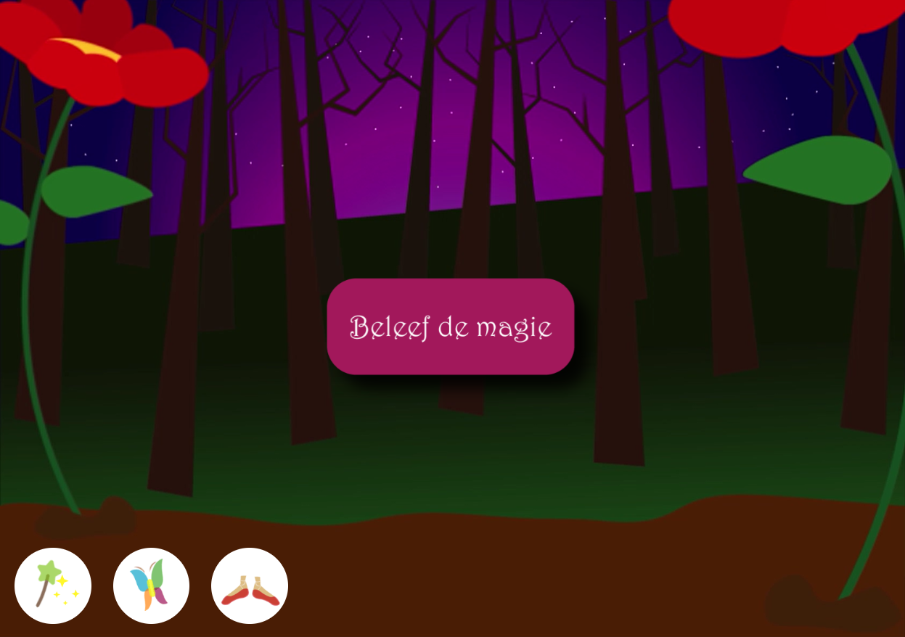

De minor
Tijdens de minor Visual Interface Design heb ik een animatie moeten maken voor het vak Interface & Beweging. De opdracht was om een karakter te animeren in een omgeving met bewegende iconen.
Het begon met het maken van een object om te animeren. Ik had gekozen voor een elfje en deze heb ik uitgewerkt in illustrator. Alle onderdelen moesten gegroepeerd worden om later te kunnen gaan animeren in After Effects.
Daarbij moeten natuurlijk passende iconen komen die de acties van het elfje aangeven en kunnen activeren. Mijn acties zijn: toveren, vliegen en dansen.
Voor de achtergrond moest het 's nachts zich in een bos afspelen en ook moet het magisch aanvoelen. De voorgrond is donker met bomen, maar achterin is het mooi paars met sterren. Ook de 2 grote bloemen voorin moeten het idee ondersteunen dat het elfje klein is als ze er naast staat.
Alles moet geanimeerd worden: het elfje, de iconen en de achtergrond. Nadat dit alles was gedaan heb ik een transitie scherm gemaakt en geluiden bij de animaties gezocht. De laatste stap was het in elkaar zetten van de animatie in een browser. Dit model heb ik van een klasgenoot (Stephan Kop) overgenomen.
Klik op de afbeelding hieronder om de volledige animatie te bekijken (fullscreen op een laptop is aangeraden)
